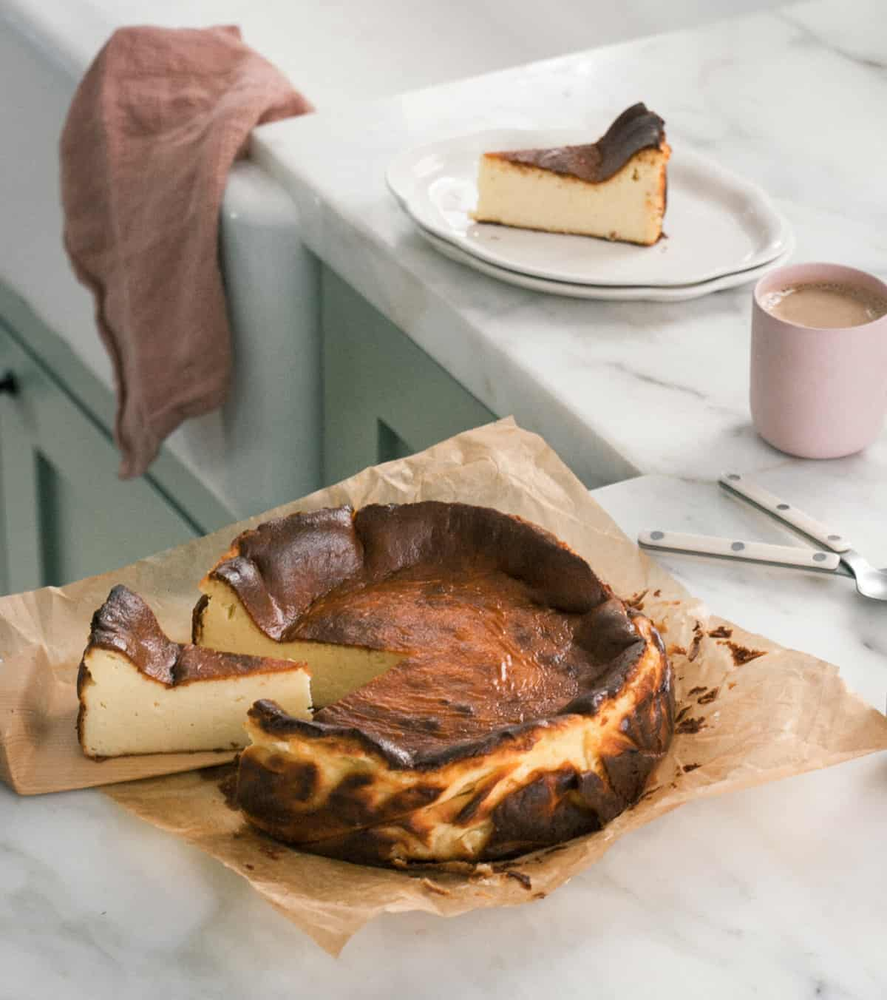

This burnt basque cheesecake is enveloped in a caramelized crust with a creamy, rich interior. This cheesecake is from the Basque region of Spain and will quickly become your go-to dessert to make.

Prep Time: 15 mins
Cook Time: 50 mins
Chilling Time: 2 hrs
Total Time: 3 hrs 5 mins
Serving Size: 8
Ingredients
3 (8-ounce) packages of cream cheese, at room temperature
1 cup granulated sugar
1 vanilla pod (or 2 teaspoons vanilla extract)
3 large eggs
1/2 teaspoon kosher salt
1 1/2 cups heavy cream
1/3 cup all-purpose flour (40g)
Steps
Preheat the oven to 400 degrees F.
You can do this with an electric hand mixer or stand-up mixer. Add the cream cheese to the bowl and beat it until smooth. Pour in the granulated sugar and vanilla beans (or vanilla extract) and beat it until smooth and fluffy, about 1 minute. Next, crack in one egg at a time, mixing it in before adding the following one. Repeat until you’ve worked your way through the eggs. Add the salt and pour in the heavy cream in a slow and steady stream and mix until combined, about 1 minute. Lastly, sift in the flour and mix it in until just incorporated.
Pour the cheesecake mixture into the prepared pan and smooth out the top. Smack it on the counter a few times so make sure it gets in those crevices.
Place the baking pan on a baking sheet (I do this in case there's any spillage–there shouldn't be) and transfer to the oven to bake for 45 to 50 minutes, until the cheesecake is puffed up and jiggly. Remove from the oven and allow to cool in the pan for about 1 hour. Remove it from the pan by lifting up the excess parchment. Allow it to cool for another hour.
As it cools, the cheesecake will fall in size and firm up. Peel off the parchment and slice it up. I like to serve this cheesecake by itself at room temperature.
Store the cheesecake in an airtight container in the fridge for at least 2 hours.